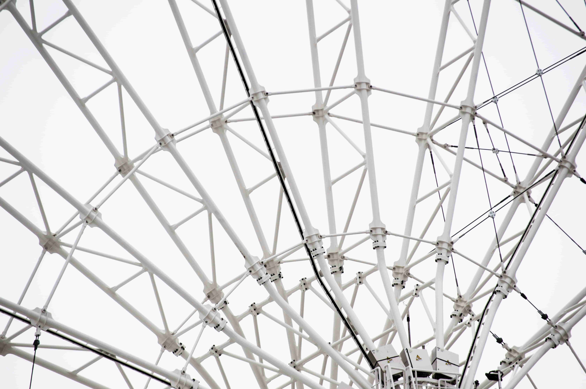

Pengantar Jaringan
Kelompok 2
Rahmi Dwi Yulianti, Syehni Nursafitri, Dwi Novianti Afdilah
M. Ridho Saputra A.D, M. Fiqram Al Farizi, Herman Syahputra
Pengertian Jaringan
Jaringan komputer adalah sekumpulan komputer yang berbagi sumber daya yang terletak di atau disediakan oleh node jaringan.
Node dari jaringan komputer dapat mencakup komputer pribadi, server, perangkat keras jaringan, atau host khusus atau tujuan umum lainnya. Mereka diidentifikasi oleh alamat jaringan, dan mungkin memiliki nama host. Nama host berfungsi sebagai label yang mudah diingat untuk node, jarang diubah setelah penugasan awal. Alamat jaringan berfungsi untuk mencari dan mengidentifikasi node dengan protokol komunikasi seperti Internet Protocol.
Manfaat
Berikut ini merupakan beberapa manfaat jaringan komputer dalam kehidupan sehari – hari..
-
Untuk berbagi dokumen
Manfaat yang pertama digunakan sebagai media untuk membagikan dokumen yang kita miliki kepada perangkat komputer lain dengan menggunakan jaringan internet.
-
Untuk menjaga dan memanajemen keamanan data
Data akan semakin baik jika disimpan secara lebih terpusat.
-
Memudahkan dalam berkomunikasi
Jaringan komputer juga sangat memudahkan untuk melakukan komunikasi antar tim maupun dengan orang lain yang berbeda geografis secara cepat dan akurat.
-
Menyampaikan informasi secara cepat
Dengan bantuan jarkom, proses penyampaian informasi menjadi lebih cepat tanpa batasan waktu dan tempat.
-
Membantu aktivitas manusia
Dan manfaat jaringan komputer terakhir adalah membantu setiap kegiatan manusia agar lebih efektif dan efisien.
Jenis dan Tipe.
Sebagian besar jaringan komputer modern menggunakan protokol berdasarkan transmisi mode paket.
Informasi dan data tersebut bisa bergerak melalui kabel atau tanpa kabel sehingga memungkinkan pengguna jaringan komputer saling bertukar dokumen maupun data lainnya. Dapat pula dikatakan bahwa jaringan komputer adalah sejumlah terminal komunikasi yang terdiri dari dua komputer atau lebih yang saling terhubung satu dengan yang lainnya.
Jarak dan Transmisinya
-
Broadcast
Jaringan broadcast merupakan saluran komunikasi tunggal yang digunakan secara bersama – sama oleh beberapa perangkat (device) yang saling terkoneksi ke jaringan yang sama..
-
Point-to-Point
Jenis yang kedua adalah jaringan point-to-point tersusun atas beberapa koneksi pasangan individu, dari satu perangkat menuju perangkat yang lain.
Jenis Jaringan
Ada beragam jenis jaringan komputer. Macam-macam jaringan komputer itu dibuat untuk beragam jenis tujuan, yang intinya adalah membantu penyelesaian banyak tugas secara efektif lewat sistem pertukaran informasi.
Macam-Macam Perangkat
Perangkat Keras adalah semua bagian fisik komputer, adapun bagian nonfisik akan disebut perangkat lunak.
Server
Server berfungsi sebagai tempat atau media untuk menyimpan informasi, serta mengelola jaringan komputer.
Hub
Hub adalah piranti untuk menghubungkan berbagai kabel untuk membentuk jaringan.
Router
Router adalah suatu perangkat yang berfungsi untuk menghubungkan dua buah jaringan yang memiliki perbedaan pada lapisan OSI I, II, dan III, misal LAN dengan Netware akan dihubungkan dengan jaringan yang menggunakan UNIX.
Tipelogi
Topologi jaringan adalah tata letak, pola, atau hierarki organisasi dari interkoneksi host jaringan, berbeda dengan lokasi fisik atau geografisnya. Biasanya, sebagian besar diagram yang menggambarkan jaringan disusun berdasarkan topologinya.